| 日付 | 2012年9月29日（土） |
|---|---|
| 山域 | 奥秩父 |
| メンバー | 家族（妻、長女・1歳） |
| 山行形態 | 子連れ日帰り |
| アクセス | 車 |
| ルート (Map) | 大弛峠 (8:55) - (9:52) 朝日岳 - (10:54) 金峰山 (12:07) - (13:18) 朝日岳 (13:37) - (14:22) 大弛峠 |
奥秩父は多くの山々が連なっている山域だが、その中で主峰と言えるのが金峰山である。
奥秩父の最高峰は北奥千丈岳に譲るが、金峰山の堂々とした山容と山頂の五丈石は一際目を引く。
金峰山への登路はいくつかあり、標高2360mの大弛峠まで車で行き、
そこから登るルートが一番容易である。
ほとんど車で上まで登ってしまうため、このルートを辿るのは
金峰山に対して少々申し訳ないという思いを持っていた。
しかし、子連れ登山ではなかなか自由がきかず、体調もあまりすぐれないことから、
今回は安易なルートを辿って金峰山を目指すことにする。
8:30に大弛峠に到着したが、駐車場はとっくに満車になっていた。
車で少し下って道路脇に縦列駐車する。
狭い林道なので、ところどころですれ違えるように駐車禁止ポイントが設けられている。
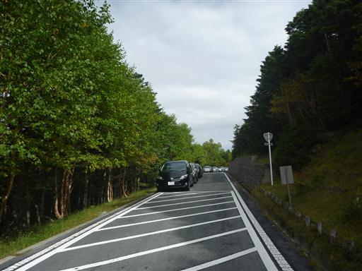
車を停めたところから少し歩いて大弛峠に到着する。標高2360m。
車が登ることのできる日本最高所の峠だ。
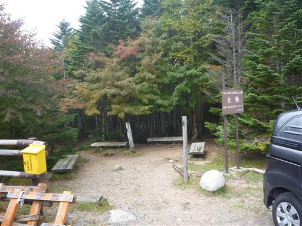
峠からは北の方に浅間山の姿が見えている。
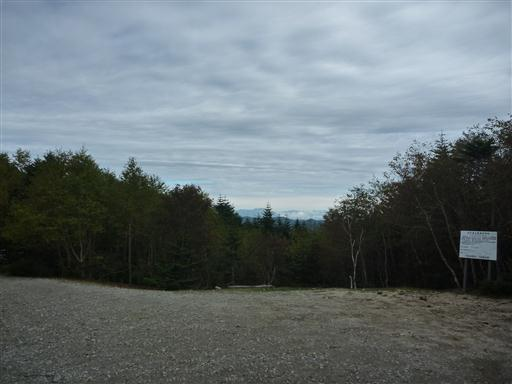
登山道に足を踏み入れる。この辺りは針広混交林だ。
広葉樹は若干色づいてきている。
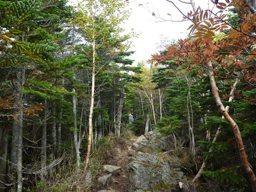
緩やかに続く尾根道を歩いていく。朝日峠に大きなケルンが積まれている。
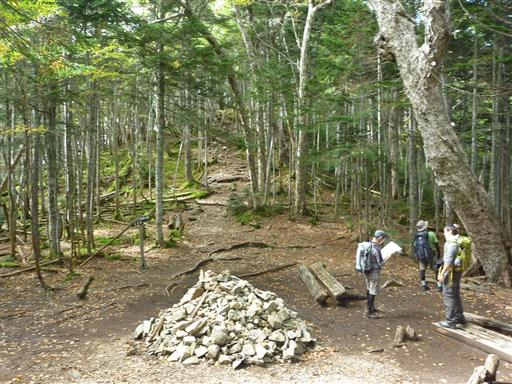
朝日岳に近づくと山頂直下は岩が積み重なっていて、一気に展望が広がる。
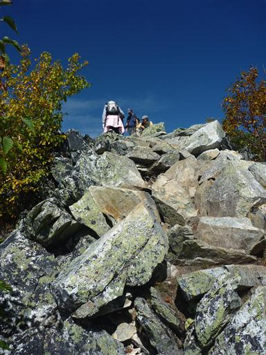
まず目に飛び込んでくるのが富士山。
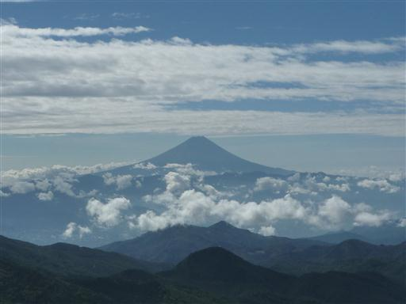
そして南アルプス。白峰三山や悪沢岳、赤石岳など南アルプスを代表する山々が見えている。
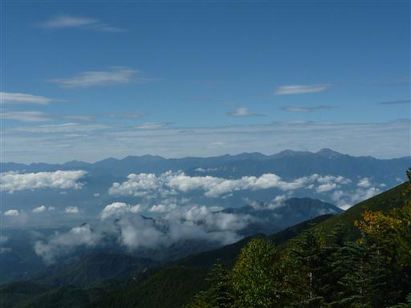
北東には奥秩父主脈の山々。3つの頭は左から三宝山、甲武信ヶ岳、木賊山だ。
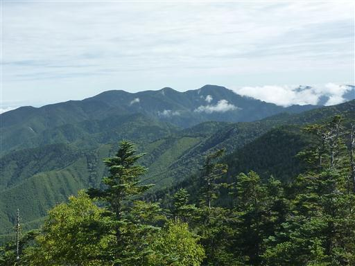
そして歩いて来た方向を振り返ると国師ヶ岳と北奥千丈岳が大きい。
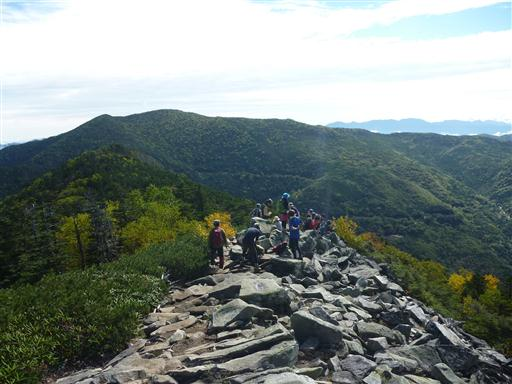
展望台から少し行くと朝日岳の山頂に到着する。
目立たないピークだが山頂標識は立派だ。
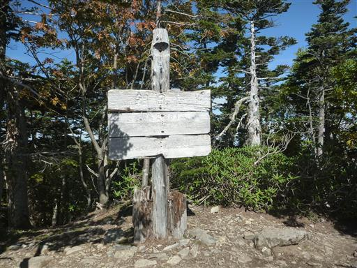
山頂から少し先に進むと前方の展望が大きく開ける。
目の前に金峰山の雄姿が望める。
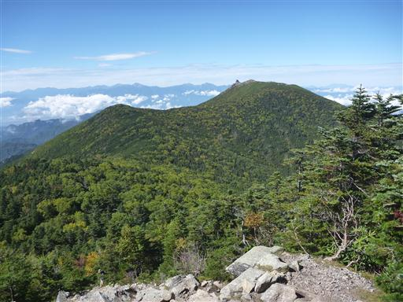
アップダウンの少ない尾根道を歩いていく。空はきれいに晴れ渡っている。
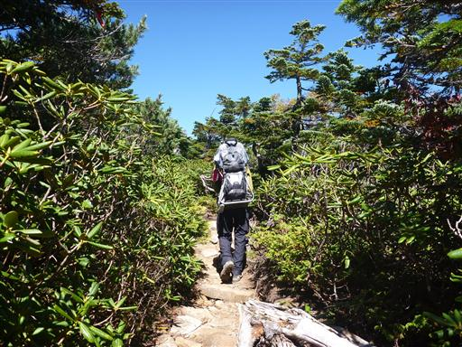
金峰山に近づくと辺りはハイマツが多くなり視界が広がってくる。
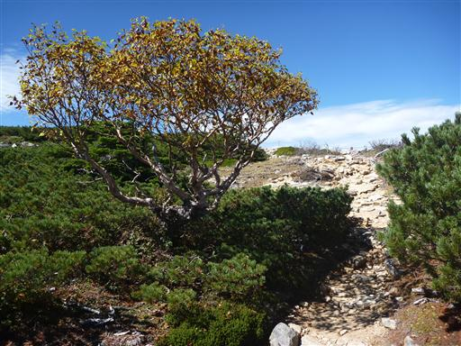
山頂手前の広場に到着。ここで休憩をしている人も多い。
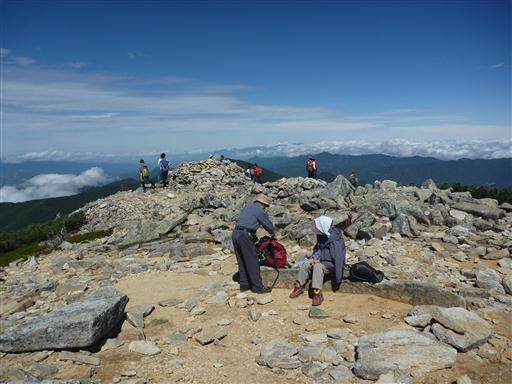
眼下には瑞牆山の岩峰が良く見えている。
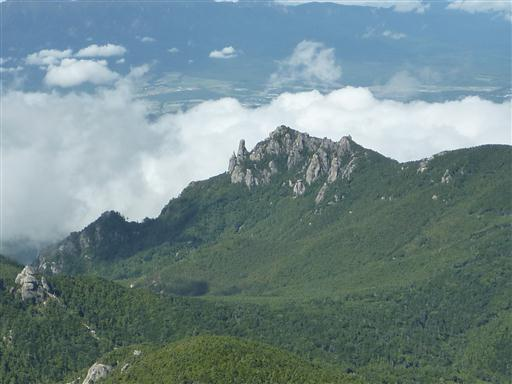
ここから金峰山まであとわずか。岩が転がる尾根を登っていく。
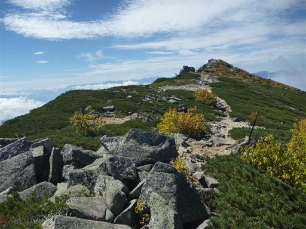
金峰山山頂に到着。標高は2599mで2600mに僅かに足りない。
大岩が積み重なる狭い山頂だ。
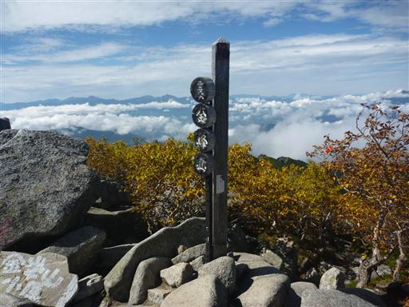
山頂で一際目立つのが五丈石。巨岩が積み重なった不思議な光景だ。
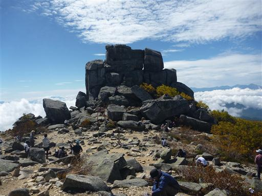
五丈石の下には小さな祠が祀られている。
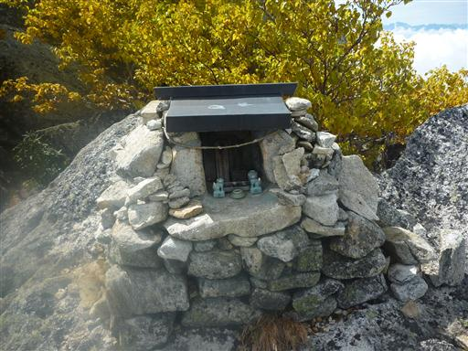
山頂からは360度の大展望が広がる。富士山は頭に笠をかぶっている。
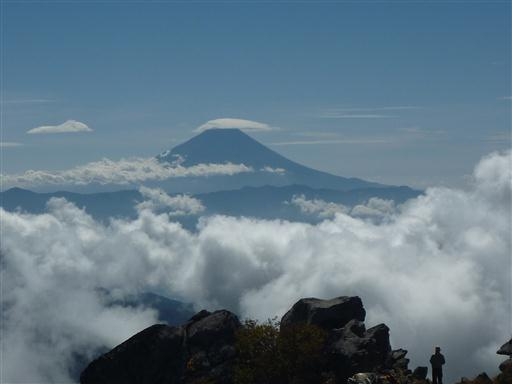
小川山。右手には瑞牆山と同じような花崗岩が露出した岩峰が見えている。
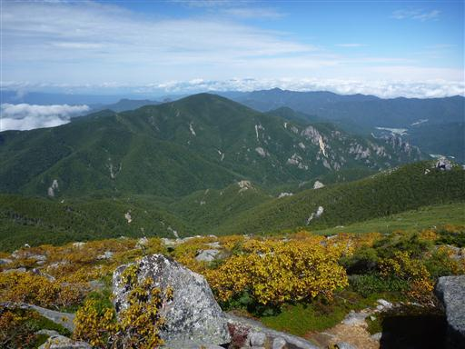
こちらの尾根は瑞牆山方面からの登山道。岩肌の露出した展望の良さそうな尾根道だ。
この辺りは黄葉が美しい。
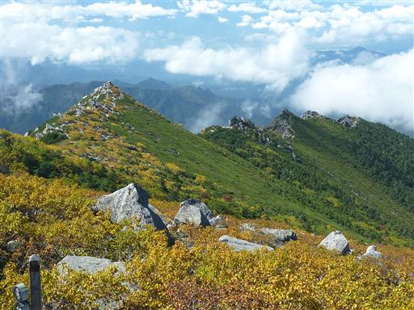
昼食をとった後、五丈石に登ってみる。
手足をかけるところに小さな溝が掘られているのだが、それでも登るのは困難で、
一般登山者には少々敷居の高い岩登りだ。
五丈石直下では大勢の登山者が休憩しているため、岩に登っていると注目の的だ。
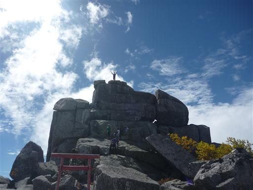
岩登りなどをしていたため、珍しく1時間以上山頂に滞在していた。
五丈石を堪能した後、下山を開始する。
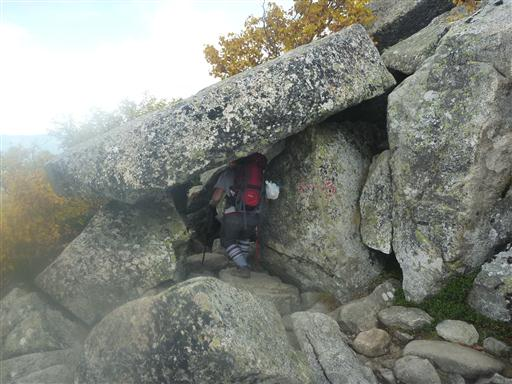
先ほどまで好天だったのに、山は雲に覆い隠されつつある。
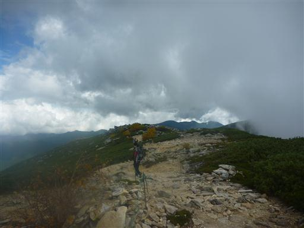
下山中に通過する鉄山の山頂標識。
登山道は山頂を巻いているが、山頂方向に向かって踏み跡が伸びている。
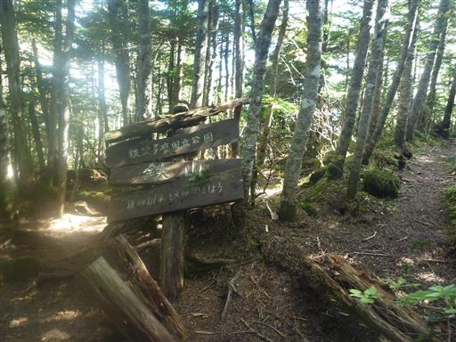
細い踏み跡をたどって鉄山山頂に行ってみることにする。
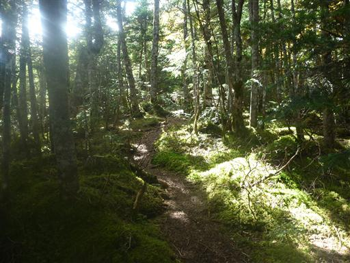
踏み跡を辿っていくとピークにたどり着く。恐らくこの辺りが鉄山の山頂だろう。
辺りは針葉樹とシャクナゲに覆われている。
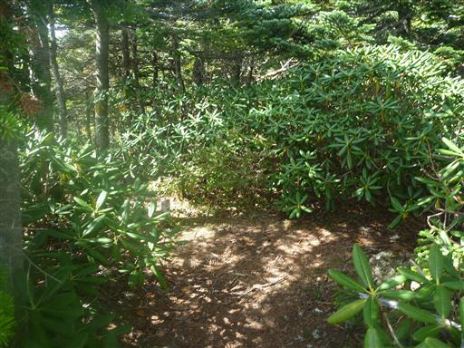
大展望とはいかないが少しだけ展望が広がる。
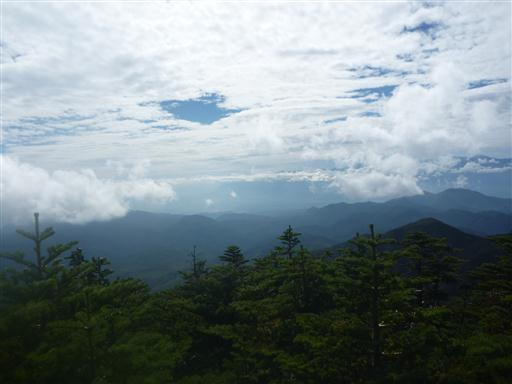
あとは来た道を辿って大弛峠まで戻ってくる。
まだ停まっている車の数は多い。
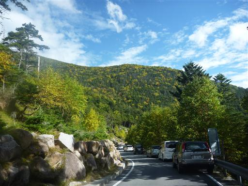
車から、あちこちにあるブドウ園を眺めながら帰る。山梨はブドウの名産地だ。
今回、歩いた距離は短かい山行だったが、山頂からの大展望は素晴らしかった。
そして前から登って見たかった五丈石に登ることができたのが何より嬉しかった。
次来るときは別の登山道から金峰山に登ってみようと思う。
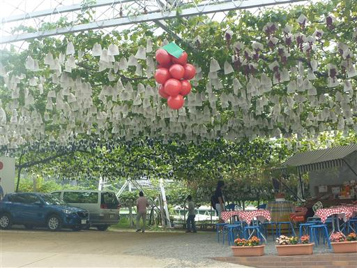